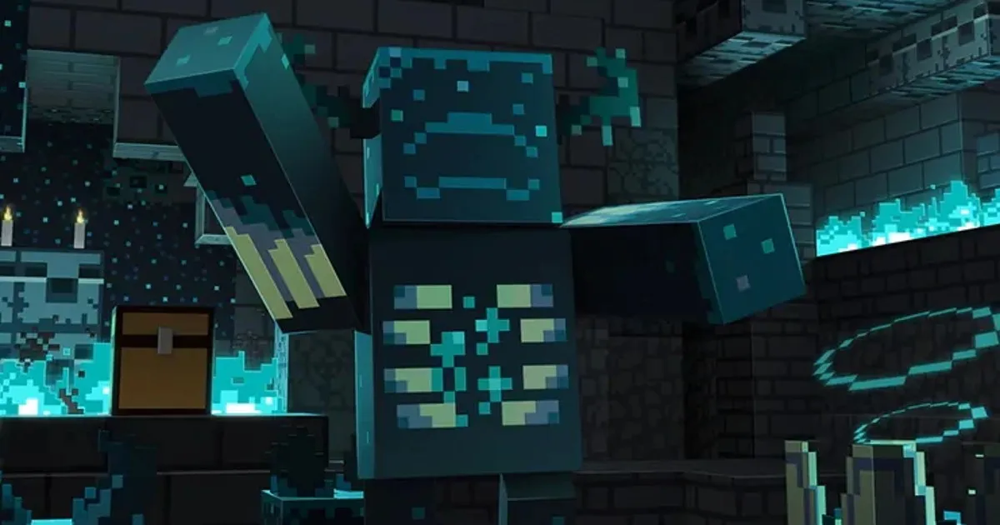
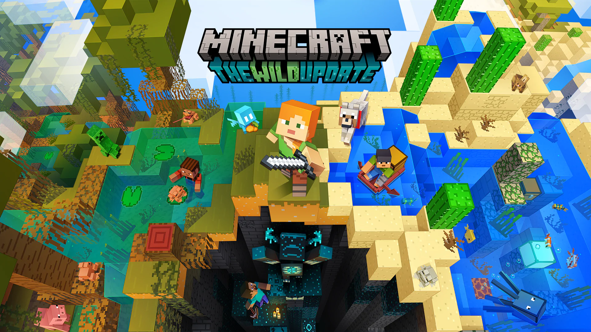

The minecraft version entered the game on June 7, 2022
The update introduces a lot of content to the game, including:
Warden and Deep Dark biome
Warden as well as the deep dark biome is the biggest change introduced in version 1.19, and it was already announced for version 1.17, then moved to 1.18, from which it was backported to 1.19 where finally Warden was added. The Warden attacks both close and ranged, making it a hard boss to kill, it has up to 500HP (250 hearts) which makes it the strongest mob in the game (Java Edition), the mob spawns in its exclusive "Deep Dark" biome, by sensor activations. Warden doesn't spawn normally, when he emerges from the ground (his spawn animation) the player gets a new Darkness effect that completely blinds us

Allay voting mob
Allay is a new flying mob that is shaped like a smaller version of Vex, however Allay is a passive mob that is able to find items for the player to hold beforehand.

Frogs and Mangrove Swamp biome
Minecraft needs new mobs all the time and the game community keeps posting new ideas. For a long time, one of these mobs was Frogs, which officially came to the game in version 1.19!
Frogs come in several colors, adequate to the climate of the biome they are found in
A new biome has also been added, the mangrove swamp, this biome has been built with brand new blocks such as mud
And more...
This is not all the new features introduced in this update, there are also smaller things such as a respawn compass that shows the place of our last death (in hardcore mode it is useless), player reporting, which is a very controversial feature added to the game that players did not like, and a few more individual changes
